1040A30 fuel filler pipe - r + r
- Path
- Procedures > 10 ENGINE > 1040 FUEL TANK AND PIPES > 1040A fuel tank and components > 1040A30 fuel filler pipe - r + r
- Kind
- repair procedure (removal / refitting; the operation number is the code)
- Applies to
- engines: 1.6 TS , 1.8 TS, 2.0 JTS, 2.5 V6, 3.2 V6, 1.9 JTD 8v , 1.9 JTD 16v, 2.0 JTS, 2.4 JTD 10v, 2.4 JTD 20v; all production periods
- Interactive page
- https://sloeber94.github.io/elrnDB-a156/en/#/3237515
Applies to: engines: 2.5 V6, 3.2 V6; all production periods
 Removing
Removing
 Refitting
RefittingPosition the vehicle on the lift.
1040A70 submerged pump assembly complete with level guage control - r + r
Drain the fuel from the tank using suitable equipment.
1. Remove the fuel filler pipe cap.
2. Undo the bolts (2a) fixing the fuel filler pipe (2b) to the bodyshell.
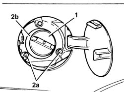
Applies to: engines: 2.5 V6, 3.2 V6; all production periods
1. Undo the bolts (1a) fixing the fuel vapour separator (1b).
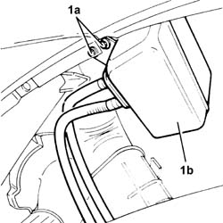
Applies to: engines: 2.5 V6, 3.2 V6; all production periods
1. Undo the nuts (1a) and the bolts (1b) and remove the protection (1c) for the fuel filler pipe after having released it from the bands.
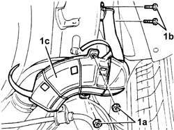
Applies to: engines: 2.5 V6, 3.2 V6; all production periods
1. Disconnect the fuel filler pipe from the tank and remove it.
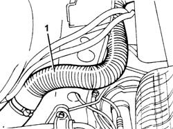
Applies to: engines: 2.5 V6, 3.2 V6; all production periods
Refitting
RemovingFit the fuel filler pipe and fix it to the tank using the band.
Fit the protection for the fuel filler pipe and fix it using the nuts and bolts.
Place the fuel vapour separator back in its housing and fix it using the bolts.
Tighten the bolts fixing the fuel filler pipe to the bodyshell.
Fit the fuel filler pipe cap.
Remove the vehicle from the ramp.
Applies to: engines: 1.6 TS , 1.8 TS; all production periods
Removing
RefittingPlace the car on the lifting bridge.
1040A70 submerged pump assembly complete with level guage control - r + r
Intake fuel out of tank by ad-hoc tools.
1. Remove plug for fuel filler pipe.
2. Unscrew screws (2a) of fuel filler pipe (2b) to body.
Applies to: engines: 1.6 TS , 1.8 TS; all production periods
1. Unscrew fixing screws (1a) of fuel vapour separator (1b).
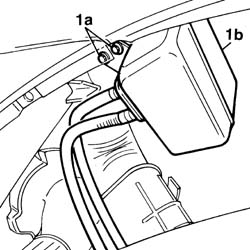
Applies to: engines: 1.6 TS , 1.8 TS; all production periods
1. Unscrew nuts (1a) and screws (1b), then remove casing (1c) of fuel filler pipe after releasing it from fixing clamps.
Applies to: engines: 1.6 TS , 1.8 TS; all production periods
1. Disconnect fuel filler pipe from fuel tank and remove it.
Applies to: engines: 1.6 TS , 1.8 TS; all production periods
Refitting
RemovingFit fuel filler pipe and fix it to tank with its clamp.
Fit fuel filler pipe casing and fix it with its nuts and screws.
Place fuel vapour separator back in its seating and fix it with its screws.
Tighten screws of fuel filler pipe to body.
Fit plug for fuel filler pipe.
Take the car off the lifting bridge.
Applies to: engines: 2.0 JTS, 2.0 JTS; all production periods
Removing
RefittingPosition the vehicle on the ramp.
Ensure that the ignition key is in OFF position, then disconnect the negative battery terminal.
 | Name | Connector |
|---|---|---|
- | Battery |
Proceed with the removal 7040B10 load platform (luggage platform) trim - r+r
Proceed with removal 7050B18 rear seat arm rest - r+r .
Proceed with removal 7050A20 one-piece rear seat cushion - r r .
Proceed with removal 7050B10 l/h or r/h head restraint (one) of rear seat - r+r .
Proceed with removal 7050A19 rear seat squab - r r .
Proceed with removal 1040A70 submerged pump assembly complete with level guage control - r + r .
Drain the fuel from the tank using suitable equipment.
1. Remove the fuel filler pipe cap.
2. Undo the bolts (2a) fixing the fuel filler pipe (2b) to the bodyshell.
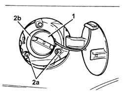
Applies to: engines: 2.0 JTS, 2.0 JTS; all production periods
1. Undo the bolts (1a) fixing the fuel vapour separator (1b).
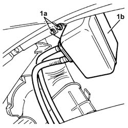
Applies to: engines: 2.0 JTS, 2.0 JTS; all production periods
1. Undo the nuts (1a) and the bolts (1b) and remove the protection (1c) for the fuel filler pipe after having released it from the bands.
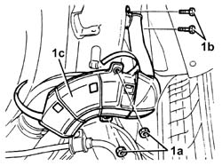
Applies to: engines: 2.0 JTS, 2.0 JTS; all production periods
1. Loosen the band, disconnect the fuel filler pipe from the tank and remove it.
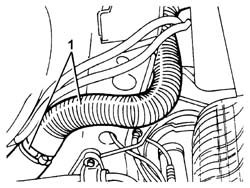
Applies to: engines: 2.0 JTS, 2.0 JTS; all production periods
Refitting
RemovingPlace the fuel filler pipe back in its housing and secure it to the tank using the band.
Place the fuel filler pipe protection back in its housing and fasten it using the nuts and bolts.
Place the fuel vapour separator back in its housing and fix it using the bolts.
Tighten the bolts fixing the fuel filler pipe to the bodyshell.
Replace the fuel filler cap in its housing
Proceed with refitting 1040A70 submerged pump assembly complete with level guage control - r + r .
Proceed with refitting 7050A19 rear seat squab - r r .
Proceed with refitting 7050B10 l/h or r/h head restraint (one) of rear seat - r+r .
Proceed with refitting 7050A20 one-piece rear seat cushion - r r .
Proceed with refitting 7050B18 rear seat arm rest - r+r .
Proceed with refitting 7040B10 load platform (luggage platform) trim - r+r .
Connect the negative (-) battery terminal.
Remove the car from the ramps.
Applies to: engines: 1.9 JTD 8v , 2.4 JTD 10v; all production periods
Removing
RefittingPosition the vehicle on the lift.
4450B11 WHEEL (one) rear - R.R.
1. Undo the bolts (1a) and remove the protection (1b) for the fuel filler pipe.
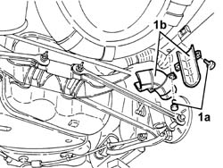
Applies to: engines: 1.9 JTD 8v , 2.4 JTD 10v; all production periods
1. Remove the fuel tank cap.
2. Remove the bolts (2a) fixing the fuel filler pipe (2b) to the bodyshell.
3. Disconnect the fuel filler pipe from the tank and remove it.
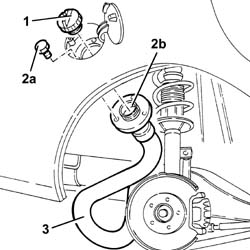
Applies to: engines: 1.9 JTD 8v , 2.4 JTD 10v; all production periods
Refitting
RemovingConnect the fuel filler pipe to the tank.
Connect the fuel filler pipe to the bodyshell and fix it using the bolts.
Fit the fuel tank cap.
Fit the fuel filler pipe protection and fix it using the bolts.
4450B11 WHEEL (one) rear - R.R.
Remove the vehicle from the ramp.
Applies to: engines: 1.9 JTD 16v; all production periods
Removing
RefittingPosition the vehicle on the ramp.
Ensure that the ignition key is in the OFF position, then disconnect the negative battery terminal (-).
| Name | Connector |
|---|---|---|
- | Battery |
Proceed with removal 4450B08 right rear wheel r r .
Proceed with removal - 7055B45 right hand rear supplementary wheel arch - r+r .
Proceed with removal 1040A70 submerged pump assembly complete with level guage control - r + r .
Draw off the fuel from the tank using suitable equipment.
1. Undo bolts (1a) and nuts (1b), loosen collars (1c), then remove the protection from fuel filler pipe (1d).
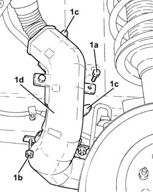
Applies to: engines: 1.9 JTD 16v; all production periods
1. Loosen the band and disconnect the fuel filler pipe from the tank.
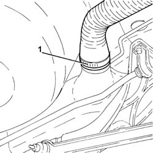
Applies to: engines: 1.9 JTD 16v; all production periods
1. Remove the fuel filler pipe cap.
2. Undo the bolts and remove fuel filler pipe assembly from the body.
3. Remove the fuel filler pipe.
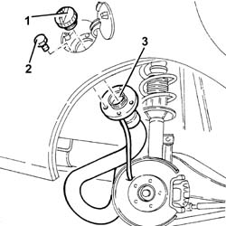
Applies to: engines: 1.9 JTD 16v; all production periods
Refitting
RemovingPlace the fuel filler pipe back in its housing and secure it using the bolts.
Connect thefuel filler pipe to the tank and secure it using the band.
Refit the fuel filler pipe protection in its housing, then secure with the bolts and collars.
Replace the fuel filler cap in its housing
Proceed with refitting 1040A70 submerged pump assembly complete with level guage control - r + r .
Proceed with refitting - 7055B45 right hand rear supplementary wheel arch - r+r .
Proceed with refitting 4450B08 right rear wheel r r .
Connect the negative (-) battery terminal.
Remove the car from the ramps.
Applies to: engines: 2.4 JTD 20v; all production periods
Removing
RefittingPosition the vehicle on the ramp.
Proceed with removal 4450B08 right rear wheel r r .
1. Undo the bolts (1a) and remove the protection (1b) for the fuel filler pipe.
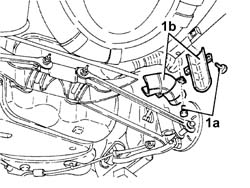
Applies to: engines: 2.4 JTD 20v; all production periods
Proceed with removal 1040A40 plug for fuel filler pipe - r + r .
1. Remove the bolts (1a) fixing the fuel filler pipe (1b) to the bodyshell.
2. Disconnect the fuel filler pipe from the tank and remove it.
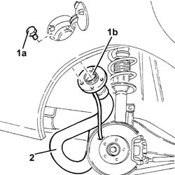
Applies to: engines: 2.4 JTD 20v; all production periods
Refitting
RemovingConnect the fuel filler pipe to the tank.
Fasten the fuel filler to the bodyshell using the fixing bolts.
Proceed with refitting 1040A40 plug for fuel filler pipe - r + r .
Fit the fuel filler pipe protection and fix it using the bolts.
Proceed with refitting 4450B08 right rear wheel r r .
Remove the car from the ramps.
Topics linked from this page (10)
- 1040A40 plug for fuel filler pipe - r + r
- 1040A70 submerged pump assembly complete with level guage control - r + r
- 4450B08 right rear wheel r r
- 4450B11 WHEEL (one) rear - R.R.
- 7040B10 load platform (luggage platform) trim - r+r
- 7050A19 rear seat squab - r r
- 7050A20 one-piece rear seat cushion - r r
- 7050B10 l/h or r/h head restraint (one) of rear seat - r+r
- 7050B18 rear seat arm rest - r+r
- A1B Battery ( BATTERY NEGATIVE )